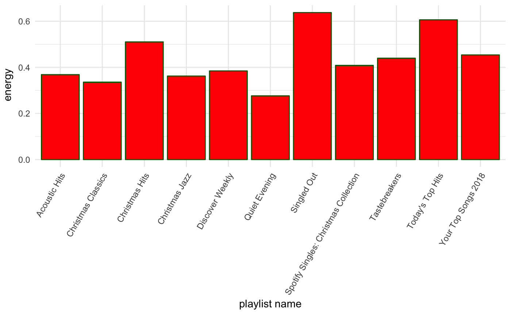
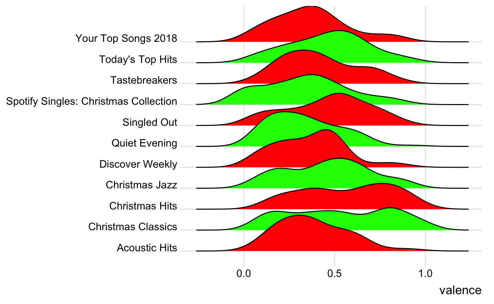
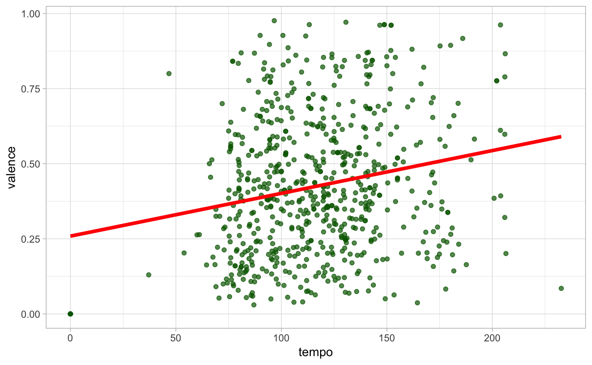

spotiverseR.RmdThis package, spotiverseR, aims to extend the spotifyr package with helper functions and data visualizations for playlists. spotiverseR integrates multiple packages into spotiverseR functions such as dplyr, ggplot2, wordcloud, geniusR, etc., in order to let users analyze playlists and create compelling playlist visualization.
devtools::install_github('charlie86/spotifyr')
library('spotifyr')The following authetication excerpt comes from the spotifyr package (here):
First, set up a Dev account with Spotify to access their Web API (here). This will give you your Client ID and Client Secret. Once you have those, you can pull your access token into R with get_spotify_access_token().
Sys.setenv(SPOTIFY_CLIENT_ID = 'xxxxxxxxxxxxxxxxxxxxx')
Sys.setenv(SPOTIFY_CLIENT_SECRET = 'xxxxxxxxxxxxxxxxxxxxx')
access_token <- get_spotify_access_token()Your Spotify URI can be found on the Spotify app. On the top right corner, go to profile. Under your name, click on the circlular button and hit “Copy Spotify URI” in the drop down list. It is recommended to save the URI in an R variable called ‘uri’ as demonstrated below.
#> [1] 1
#> [1] 1
#> [1] 2
#> [1] 1
#> [1] 3
#> [1] 1
#> [1] 4
#> [1] 1
#> [1] 5
#> [1] 1
#> [1] 6
#> [1] 1
#> [1] 7
#> [1] 1
#> [1] 8
#> [1] 1
#> [1] 9
#> [1] 1
#> [1] 2
#> [1] 10
#> [1] 1
#> [1] 11
#> [1] 1uri <- 1234567In order to retrieve the comprehensive dataset of your Spotify public playlists, we recommend making the following function call and saving it as an R variable called ‘data’.
data <- get_user_audio_features(uri)The definitions dataframe contains the Spotify variables in the Spotify API, their value type (int or float), and their description as it’s shown in the Spotify documentation.
The christmas_playlists is an example dataframe for testing. It has the same format as the dataframe from the get_user_audio_features(uri) function call. It contains four different Christmas playlists with 26 variables and 225 rows.
This function does not take in any arguments, it just returns a character vector with the names of all parameters when you type in feat_names().
#feat_names()This function does not take in any arguments. It is called on its own and returns a description in the console with the contents of the definitions.Rda file.
#feat_attributes()This function contains the descriptions of all parameters as they are written in the Spotify API within a dataframe. The user can see the description of a parameter when they input the parameter name.
#define_feat(valence)This function takes in a character string and subsets all the playlist names in the playlist_name column that contains that substring.
filter_by_ss(col=playlist_name, substring="jazz")
#> Loading required package: rlang
#> Loading required package: dplyr
#>
#> Attaching package: 'dplyr'
#> The following objects are masked from 'package:stats':
#>
#> filter, lag
#> The following objects are masked from 'package:base':
#>
#> intersect, setdiff, setequal, union
#> Loading required package: stringr
#> # A tibble: 0 x 29
#> # ... with 29 variables: playlist_name <chr>, playlist_uri <chr>,
#> # playlist_tracks_url <chr>, playlist_num_tracks <int>,
#> # snapshot_id <chr>, playlist_img <chr>, track_name <chr>,
#> # track_uri <chr>, artist_name <chr>, album_name <chr>, album_img <chr>,
#> # track_added_at <dttm>, track_popularity <int>,
#> # track_preview_url <chr>, track_open_spotify_url <chr>,
#> # danceability <dbl>, energy <dbl>, key <chr>, loudness <dbl>,
#> # mode <chr>, speechiness <dbl>, acousticness <dbl>,
#> # instrumentalness <dbl>, liveness <dbl>, valence <dbl>, tempo <dbl>,
#> # duration_ms <dbl>, time_signature <dbl>, key_mode <chr>The function create_mean_hist(data, …) allows the user to create a histogram comparing a mean variable across different playlists. Here we see that the playlist ‘Singled Out’ has the highest average of energy out of all listed playlists, with ‘Today’s Top Hits’ coming in close second. As exepected, the playlist ‘Quiet Evening’ has the smallest average of energy.
create_mean_hist(data, energy, color = "red", border = "darkgreen")
#> Loading required package: ggplot2
The function create_joyplot(data,…) allows the user to create a joyplot (or ridgeline plot) comparing the distributions of a numeric variable across different playlists.
create_joyplot(data, valence, c("red","green"))
#> Loading required package: ggridges
#>
#> Attaching package: 'ggridges'
#> The following object is masked from 'package:ggplot2':
#>
#> scale_discrete_manual
#> Picking joint bandwidth of 0.0867
The function create_mean_df(data,…) allows the user to create either a dataframe or table comparing one mean variable across different playlists.
create_mean_df(data, valence, asc = F, kable=T, bg = "lightgreen", text = "red")
#> Loading required package: knitr
#> Loading required package: kableExtra| playlist | mean (valence) |
|---|---|
| Christmas Hits | 0.5664573 |
| Christmas Classics | 0.5277071 |
| Today’s Top Hits | 0.4645280 |
| Singled Out | 0.4618267 |
| Christmas Jazz | 0.4606675 |
| Tastebreakers | 0.4141480 |
| Acoustic Hits | 0.3772738 |
| Your Top Songs 2018 | 0.3704800 |
| Discover Weekly | 0.3672633 |
| Spotify Singles: Christmas Collection | 0.3410750 |
| Quiet Evening | 0.3352867 |
The function create_lr(data,…) allows the user to create a linear regression model (or models) comparing two numeric variables. If the user selects multi = T, the output will show a different linear regression model per playlist. Otherwise, all playlists are grouped together, and the output will result in a single linear regression model.
create_lr(
data = data,
param = tempo,
param2 = valence,
points = "darkgreen",
line = "red",
theme = "light",
multi = F
)
This function takes in a string of a playlist, a stop_vector that can remove certain common words like “yeah” and “like” (as well as any other words the user find as irrelevent), and del_file which is a boolean value that asserts whether the user wants to delete the output text file that is generated within the function and that stores all the lyrics that are accumulated for the purposes of generating the word cloud. This function would be especially useful for themed playlists.
#create_wordcloud("Discover Weekly", c("yeah", "like"), del_file = T)This function takes in a string of a playlist and a string of parameter and returns a dataframe with the top 5 songs.
playlist_top_songs("Christmas Jazz", valence, asc = T, top = 10, bg = "lightgreen", text = "red")
#> Loading required package: formattable| track_name | valence |
|---|---|
| Jingle Bells | 0.892 |
| We Wish You The Merriest | 0.869 |
| Frosty The Snowman | 0.841 |
| Sleigh Ride | 0.829 |
| Here Comes Santa Claus (Right Down Santa Claus Lane) - Single Version | 0.749 |
| Baby, It’s Cold Outside (feat. Meghan Trainor) | 0.684 |
| Man With The Bag | 0.684 |
| What A Wonderful Time Of Year | 0.635 |
| Little Jack Frost Get Lost | 0.631 |
| Jingle Bell Rock (with The Patrick Williams Orchestra) | 0.626 |